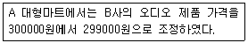
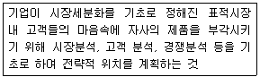
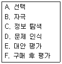
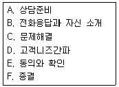
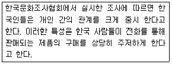
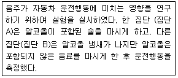
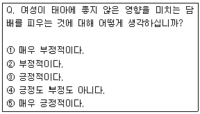
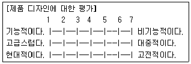
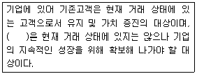

텔레마케팅관리사 (2017-08-26 기출문제)
1과목: 판매관리
1. 유통경로의 설계과정을 바르게 나열한 것은?
- 고객욕구분석 → 유통경로의 목표설정 → 경로대안의 평가 → 주요 경로대안의 식별
- 고객욕구분석 → 유통경로의 목표설정 → 주요 경로 대안의 식별 → 경로대안의 평가
- 고객욕구분석 → 주요 경로대안의 식별 → 유통경로의 목표설정 → 경로대안의 평가
- 고객욕구분석 → 주요 경로대안의 식별 → 경로대안의 평가 → 유통경로의 목표설정
(정답률: 70%)

2. 유통경로를 설계할 때 고려해야 할 사항과 가장 거리가 먼 것은?
- 유통기관의 광고 수준
- 이용할 유통기관의 수
- 유통기관에 대한 통제 수준
- 소비자에게 제공할 유통서비스 수준
(정답률: 62%)
3. 소비자가 서비스 구매의 의사결정과정에서 접할 수 있는 일반적인 위험 유형에 관한 설명으로 옳지 않은 것은?
- 재무적 위험 - 구매가 잘못되었거나 서비스가 제대로 수행되지 않았을 때 발생할 수 있는 금전적인 손실
- 물리적 위험 - 구매했던 의도와 달리 기능을 제대로 발휘하지 못할 가능성
- 사회적 위험 - 구매로 인해 소비자의 사회적인 지위가 손상 받을 가능성
- 심리적 위험 - 구매로 인해 소비자의 자존심이 손상 받을 가능성
(정답률: 55%)
4. 아웃바운드 텔레마케팅의 특성으로 틀린 것은?
- 아웃바운드에서는 고객 리스트가 반응률을 결정하며 기본적으로 고객주도형이다.
- 아웃바운드는 무차별적 전화 세일즈와는 달리 전화 걸기 위한 사전준비가 필요하다.
- 고정고객관리는 신규고객 획득에 비해 시간과 비용면에서 경제적이고 효과도 크다.
- 아웃바운드가 인바운드보다 상대적으로 고도의 기술을 요하며 마케팅 전략, 통합기법 등의 노하우, 상담원의 역량 등에 큰 영향을 받는다.
(정답률: 74%)
5. 아웃바운드 텔레마케팅에서 판매의 효율성을 제고시키기 위한 방안과 가장 거리가 먼 것은?
- 아웃바운드 텔레마케팅에서의 판매관리는 마케팅 4P와 4C(Communication, Commerce, Community, Contents)를 전략적으로 적절히 활용한다.
- 원활한 판매활동과 고객만족을 실현하기 위해서 판매관리 데이터베이스의 정보 시스템화를 촉진시켜야 한다.
- 고객과 원활히 대화할 수 있는 홈페이지를 구축하고 상품에 대한 정보교환 및 문의는 이메일을 통해서만 가능하게 한다.
- 아웃바운드 텔레마케팅 분야에 적합한 상품을 적극적으로 개발한다.
(정답률: 81%)
6. 고객속성 데이터에 대한 설명으로 옳은 것은?
- 주로 콜센터나 기업의 내부에서 직접 확보 또는 생성한 데이터베이스를 말한다.
- 외부 전문기관에서 구입한 명단, 제휴마케팅을 통해 획득한 데이터베이스를 말한다.
- 고객이 지닌 고유 속성으로 주소, 전화번호 등의 데이터를 의미한다.
- 거래나 구매사실, 구매행동 결과로 나타나는 속성으로 회원가입일, 최초구매일, 연체 내역 등의 데이터를 말한다.
(정답률: 54%)
7. 다음은 어떤 가격조정전략에 해당하는가?

- 세분화 가격결정
- 심리적 가격결정
- 촉진적 가격결정
- 지리적 가격결정
(정답률: 77%)
8. 인바운드 고객 상담은 신속한 고객 응대를 위해 다양한 기술을 많이 활용하게 된다. 인바운드 고객 상담을 위해 사용되는 CTI(Computer Telephony Integration) 기술이 현재 제공하는 기능이 아닌 것은?
- 전화 건 사람의 전화 번호 인식
- 컴퓨터를 통한 전화 걸기
- 고객에 대한 정보를 불러 와서 스크린에 보여주기
- 고객의 성향에 대한 분석
(정답률: 62%)
9. 다음에서 설명하고 있는 용어는?

- 표적시장
- 차별화 마케팅
- 내부시장분석
- 포지셔닝
(정답률: 74%)
10. 소비자의 구매 의사결정 과정을 순서대로 바르게 나열한 것은?

- B → D → C → E → A → F
- B → D → A → E → C → F
- D → B → E → C → A → F
- D → B → C → E → A → F
(정답률: 50%)
11. 소비자가 구매행위에 대한 최소한의 노력을 들이는 제품으로 편리한 위치에 있는 매장을 이용하여 구매하는 소비재의 유형은?
- 편의품
- 선매품
- 전문품
- 비탐색품
(정답률: 79%)
12. 잠재고객에 대한 설명으로 옳은 것은?
- 자사에 한 번 이상 방문한 고객
- 상품을 구매하지는 않았으나 상품에 대해 관심을 가지고 있는 고객
- 자사 제품을 정기적으로 구매하는 고객
- 자사에서 판매하는 모든 상품을 구매하는 고객
(정답률: 78%)
13. 가격결정에 있어서 상대적으로 고가의 가격이 적합한 경우가 아닌 것은?
- 수요의 가격 탄력성이 높을 때
- 진입장벽이 높아 경쟁기업의 진입이 어려울 때
- 규모의 경제효과를 통한 이득이 미미할 때
- 높은 품질로 새로운 소비자층을 유인하고자 할 때
(정답률: 65%)
14. 인바운드 텔레마케팅 활용분야에 해당하는 것은?
- 시장조사
- 가맹고객 획득
- 대금회수, 계약갱신
- 고객의 각종 주문이나 문의 접수
(정답률: 76%)
15. 마케팅의사결정 지원시스템에 관한 설명으로 옳지 않은 것은?
- 일종의 보조적인 하드웨어와 소프트웨어로 된 통계적 도구와 의사결정 모델을 말한다.
- 자료(Data), 모형(Model), 통계(Statics)의 3가지로 구성된다.
- 여러 하부시스템에 의해 수집된 정보는 적기에 의사결정자에게 제공되어야 한다.
- 재고정보 시스템 등과 같은 분화된 정보시스템을 잘 갖추어야 한다.
(정답률: 39%)
16. 아웃바운드 텔레마케팅의 판매촉진 강화를 위한 방안이 아닌 것은?
- 상담원은 고객의 요구만을 열심히 경청하게 한다.
- 상담원들에게 상품에 대한 사전지식을 철저히 쌓도록 한다.
- 고객에게 호감을 줄 수 있는 커뮤니케이션 기술을 갖추도록 한다.
- 상담원은 고객의 반론에 대한 자연스러운 대응력을 갖추도록 한다.
(정답률: 82%)
17. e-mail을 이용한 마케팅의 특성으로 옳지 않은 것은?
- e-CRM 중심의 접촉경로를 활용한다.
- 많은 비용이 소요된다.
- 쌍방향 커뮤니케이션을 추구한다.
- 전달속도가 빠르다.
(정답률: 82%)
18. 아웃바운드 텔레마케터가 가져야 할 자질로서 적합하지 않은 것은?
- 밝고 생동감 있는 목소리
- 목표의식과 달성능력
- 수동적인 상담자세
- 인내심과 냉철한 판단력
(정답률: 81%)
19. 주문 접수처리 업무의 특성에 대한 설명으로 옳은 것은?
- 일반적으로 홈쇼핑, 카탈로그 쇼핑 업체에서 많이 이루어진다.
- 주로 상품구매 고객의 불만사항을 접수하는 역할만 한다.
- 연결된 통화의 품질 유지가 우선이며 이를 위해서 때로는 들어오는 통화 중 일부를 포기하는 것이 바람직하다.
- 고객이 주도하는 전화이므로 초보적인 상담원도 문제없이 처리할 수 있는 업무이다.
(정답률: 67%)
20. 효과적인 시장 세분화 조건에 해당하지 않는 것은?
- 제품 및 서비스의 품질과 양을 감소시키거나 가격을 통제할 수 있는 강력한 공급업자가반드시 있어야 한다.
- 세분시장의 규모, 구매력 등이 측정 가능해야 한다.
- 세분시장에 접근할 수 있어야 하고, 그 시장에 어느 정도 효과적으로 활동할 수 있느냐를 고려해야 한다.
- 세분시장을 유인하여 서브할 수 있도록 효과적인 마케팅 프로그램을 입안하여 활동할 수있어야 한다.
(정답률: 77%)
21. 판매촉진 전략에 대한 설명으로 옳지 않은 것은?
- 상품에 따라 촉진믹스의 성격이 달라진다.
- 광고(advertising)는 비인적 대중매체를 활용하는 촉진수단이다.
- 불황기에는 촉진활동보다 경로 및 가격설정전략이 중요하다.
- 촉진의 본질은 소비자에 대한 정보의 전달에 있다.
(정답률: 42%)
22. 충성고객이 기업에 미치는 영향으로 볼 수 없는 것은?
- 새로운 고객창출의 용이성
- 충성고객 신용관리를 위한 비용의 증대
- 보다 우수한 제품 및 서비스의 개발 및 제공
- 기업이 추구하는 고객관리를 위한 새로운 전략 수립이 용이
(정답률: 57%)
23. 고객세분화의 기준에 해당하지 않는 것은?
- 인구통계적 변수
- 유통경로적 변수
- 행동분석적 변수
- 심리분석적 변수
(정답률: 57%)
24. 전문품의 특성에 해당하지 않는 것은?
- 대체품이 존재하지 않고 브랜드 인지도가 높다.
- 소비자가 품질, 가격, 색상, 디자인을 중심으로 대체 상품을 비교한 후 선택하는 성향의제품이다.
- 일반적으로 고가격 정책을 유지한다.
- 유명 디자이너의 제품, 의상, 미술작품 등이 해당된다.
(정답률: 73%)
25. 인바운드 상담 절차를 바르게 나열한 것은?

- A → C → D → B → E → F
- A → D → C → B → E → F
- A → B → D → C → E → F
- A → D → B → C → E → F
(정답률: 77%)
2과목: 시장조사
26. 다음 중 종속변수를 선행하면서 영향을 미치는 변수는?
- 잔여변수
- 외생변수
- 독립변수
- 통제변수
(정답률: 54%)
27. 자료편집과정에서 주의를 기울여야 할 항목과 가장 거리가 먼 것은?
- 일관성
- 완결성
- 자유응답형의 처리
- 주관성
(정답률: 60%)
28. 다음 중 확률표본추출방법이 아닌 것은?
- 편의표본추출법
- 단순무작위표집
- 층화표집
- 집락표집
(정답률: 60%)
29. 탐색조사에 대한 설명으로 적절하지 않은 것은?
- 조사 시점을 달리하여 동일한 현상에 대한 측정을 반복한다.
- 문제와 기회의 포착에 주안점을 둔다.
- 상황에 관련된 변수들 사이의 관계에 대한 통찰력을 제고한다.
- 최종적인 조사를 시행하기 전에 관련된 정보를 입수한다.
(정답률: 45%)
30. 전화 서베이 방법의 장점이 아닌 것은?
- 빠른 시간 내에 자료를 수집할 수 있다.
- 저렴한 비용으로 많은 사람에게 자료를 얻을 수 있다.
- 직접 얼굴을 대면하지 않기 때문에 민감한 문제에 대한 질문이 가능하다.
- 연구자가 알고자 하는 다양한 문제에 대하여 시간적 제한 없이 여러 가지 질문을 할 수있다.
(정답률: 51%)
31. 표본 프레임(sampling frame)에 대한 설명으로 틀린 것은?
- 표본을 추출하기 위한 모집단의 목록을 말한다.
- 표본추출단위가 집단인 경우에는 모집단의 목록인 표본프레임도 개인별 목록이 아니라 집단별 목록만 있으면 된다.
- 비확률표본추출방법을 이용할 경우 정확한 표본 프레임이 반드시 있어야 한다.
- 정확한 확률표본 추출을 하기 위해서는 모집단과 정확하게 일치하는 표본 프레임이 확보되어야 한다.
(정답률: 42%)
32. 텔레마케터를 활용해서 보험 상품을 판매하고자 하는 보험사에게 있어, 다음과 같은 정보가 주어졌다. 이 정보를 무엇이라 하는가?

- 내부 2차 자료
- 외부 2차 자료
- 내부 자료
- 종속변수
(정답률: 70%)
33. 다음 중 코딩과 분석이 용이하고, 응답하기가 쉽고 협조를 쉽게 얻어낼 수 있으며 조사자에 의한 영향을 배제할 수 있는 질문형태는?
- 자유응답형
- 양자택일형
- 다지선다형
- 가치개입형
(정답률: 59%)
34. 다음 중 개인의 사생활(privacy) 보호로 면접조사가 어려울 때 실시할 수 있는 조사방법으로 가장 적합한 것은?
- 조사원을 이용하여 질문지를 배포하고 우편으로 회수한다.
- 조사원을 이용하여 질문지를 배표하고 전화로 조사한다.
- 우편으로 질문지를 배포하고 전화로 조사한다.
- 조사대상자들을 한 자리에 모아 질문지를 배포하고 전화로 조사한다.
(정답률: 53%)
35. 시장조사를 통해 수집된 자료의 처리 순서를 바르게 나열한 것은?
- 편집(editing) → 입력(key-in) → 코딩(coding)
- 코딩(coding) → 편집(editing) → 입력(key-in)
- 편집(editing) → 코딩(coding) → 입력(key-in)
- 입력(key-in) → 코딩(coding) → 편집(editing)
(정답률: 50%)
36. 1차 자료와 2차 자료를 비교한 것으로 옳지 않은 것은?
- 1차 자료는 수집과정에의 관여도가 높고, 2차 자료는 관여도가 낮다.
- 1차 자료는 수집비용이 적게 들고, 2차 자료는 많이 든다.
- 1차 자료는 수집기간이 길고, 2차 자료는 짧다.
- 1차 자료는 수집목적이 당면한 문제에 대한 직접적 해결이고, 2차 자료는 당면한 문제에도움을 줄 수 있는 간접적 해결이다.
(정답률: 64%)
37. 관찰대상들이 가지고 있는 속성의 상대적 크기를 측정하여 대상 간 서로 비교할 수 있도록 하는 척도는?
- 명목척도
- 서열척도
- 등간척도
- 비율척도
(정답률: 40%)
38. 시장조사를 위한 면접조사의 특성으로 틀린 것은?
- 커뮤니케이션에 전문적인 능력을 가진 진행자의 역할이 중요하다.
- 형식적이고 정형화된 절차를 통해 정보를 수집한다.
- 여유를 가져야 깊고 풍부한 정보를 수집할 수 있다.
- 마케팅 조사에서 활용빈도가 높아지고 있다.
(정답률: 62%)
39. 다음 실험에 관한 설명으로 옳지 않은 것은?

- 알코올이 운전행동에 영향을 미치는 인과관계를 분명하게 알 수 있다.
- 독립변수는 알코올 섭취 여부이다.
- 종속변수는 운전행동에 관한 측정치이다.
- 이 설계에서는 위약효과(placebo effect)를 통제할 수 없다.
(정답률: 49%)
40. 응답자의 권리 보호와 거리가 먼 것은?
- 응답자의 개인정보를 상품판매에 이용해서는 안 된다.
- 응답자의 개인정보를 조사의뢰회사에 누설해서는 안 된다.
- 응답자의 개인정보는 보호되어야 한다.
- 응답자의 개인정보를 임의로 활용하여 재조사를 요구할 수 있다.
(정답률: 80%)
41. 종단조사에 관한 설명으로 틀린 것은?
- 시점을 달리하여 동일한 현상에 대한 측정을 되풀이하는 조사방법이다.
- 각 기간 동안 일어난 변화에 대한 측정이 주된 과제가 된다.
- 특정 조사대상들을 선정해 놓고 반복적으로 조사를 실시하는 조사방법이다.
- 모집단에서 임시로 추출된 표본으로부터 자료를 얻는다.
(정답률: 45%)
42. 전화면접법의 단점이 아닌 것은?
- 그림, 도표 등의 시각적 보조자료를 활용할 수 없다.
- 전화를 통해 접근할 수 있는 대상이 인구학적 변수에 따라 달라질 수 있다.
- 질문의 길이와 내용에 제한을 받게 된다.
- 조사자들에 대한 감독이 어렵다.
(정답률: 42%)
43. 초점면접법과 같이 조사연구의 목적과 내용에 대해서 미리 질문내용을 결정하고, 나머지는 면접지침에 따라 융통성 있게 면접하는 방법은?
- 표준화면접
- 비표준화면접
- 반표준화면접
- 비지시적면접
(정답률: 56%)
44. 면접자 선정 시 고려해야 할 사항과 가장 거리가 먼 것은?
- 적절한 면접시간 설정
- 면접에 소요되는 제반 경비 고려
- 응답자에 대한 접근 용이도 고려
- 면접 목적에 맞는 대상자 선정
(정답률: 57%)
45. 다음의 설문 내용을 볼 때 설문지 작성 시 어떤 점에 유의하여야 하는가?

- 응답자를 비하하거나 무시하는 표현의 금지
- 응답하기 곤란한 질문은 간접적으로 질문
- 사실을 비화한 허구적 질문
- 대답의 유도 또는 강요하는 표현 금지
(정답률: 40%)
46. 자료 수집을 위해 사용된 방법론의 타당성을 확인하기 위한 것으로 가장 거리가 먼 것은?
- 출판시기
- 표본의 크기와 질
- 설문지 설계와 관리
- 응답률과 질
(정답률: 46%)
47. 다음 중 탐색적 조사방법에 해당하지 않는 것은?
- 전문가 의견조사
- 문헌조사
- 실험연구
- 사례연구
(정답률: 58%)
48. 시장조사의 중요성에 대한 설명으로 옳지 않은 것은?
- 고객의 특성, 욕구, 그리고 행동에 대한 정확한 이해를 통해 고객지향적인 마케팅활동을 가능케 해준다.
- 마케팅 전략 수립 및 집행에 필요한 모든 정보를 적절한 시기에 입수할 수 있다.
- 시장조사는 타당성과 신뢰성 높은 정보의 제공을 통해 의사결정의 기대가치를 높일 수 있는 수단이 된다.
- 정확한 시장정보와 경영활동에 대한 효과분석은 기업목표의 달성에 공헌할 수 있는 자원의 배분과 한정된 자원의 효율적인 활용을 가능케 한다.
(정답률: 57%)
49. 질문지 작성 시 폐쇄형 질문의 장점이 아닌 것은?
- 부호화와 분석이 용이하여 시간과 경비를 절약할 수 있다.
- 민감한 주제에 보다 적합하다.
- 질문지에 열거하기에는 응답의 범주가 너무 클 경우에 사용하면 좋다.
- 질문에 대한 대답이 표준화되어 있기 때문에 비교가 가능하다.
(정답률: 44%)
50. 다음 척도의 종류는?

- 서스톤 척도
- 리커트 척도
- 거트만 척도
- 의미분화 척도
(정답률: 39%)
3과목: 텔레마케팅관리
51. 다음 중 텔레마케팅 활동과 가장 거리가 먼 것은?
- 백화점에서 생일 고객에게 축하 전화를 한다.
- 여행사에서 Fax를 이용하여 신여행상품을 소개한다.
- 이동 통신사에서 전화로 신상품에 대한 고객 반응으로 조사한다.
- 우연히 길에서 마주친 동창생에게 상품을 소개하였다.
(정답률: 74%)
52. 콜센터 경력개발 경로 수립 관련 사항과 거리가 먼 것은?
- 콜센터 규모를 고려하기보다는 필요한 전문가를 각각 배출할 수 있도록 개발하여야 한다.
- 조직의 요구와 직원들의 요구를 균형을 맞춰 개발한다.
- 선발, 코칭, 훈련, 성과 피드백과 같은 다른 프로세스와도 연계되어야 한다.
- 경력을 개발할 수 있는 훈련을 가능하게 해야 한다.
(정답률: 62%)
53. OJT(On the Job Training)의 설명으로 옳지 않은 것은?
- 현장적응 훈련이다.
- OJT는 사내직업훈련이다.
- 실무에 투입되기 전 평가결과에 대해 피드백한다.
- OJT 리더는 피교육자의 문제점, 건의사항을 수렴한다.
(정답률: 50%)
54. 상담원들의 고객 상담 및 서비스 품질의 강점과 약점을 평가하고 측정하기 위해 고객과의 콜 상담내용을 듣거나 또는 멀티미디어를 통해 접촉내용을 관찰하는 모든 과정은?
- Call Taping
- QT(Queue Time)
- QA(Quality Assurance)
- QM(Quality Monitoring)
(정답률: 57%)
55. 콜센터 리더의 역할로 옳지 않은 것은?
- 대행자
- 정보제공자
- 정보수집자
- 동기부여자
(정답률: 60%)
56. 텔레마케팅 성과분석 범위에 대한 설명으로 틀린 것은?
- 텔레마케터 개인의 일일 업무일지를 통하여 개인성과 분석을 한다.
- 고객명단 정리 및 일반적인 업무처리 시간은 개인성과의 총 소요 시간에서 제외한다.
- 텔레마케터의 처리능력은 시간단위별로 평가를 하는 것이 일반적이다.
- 일반적으로 텔레마케터에게 부과하는 목표는 손익분기점에서 최소 15% 이상이다.
(정답률: 50%)
57. (복원 오류로 문제 및 보기 내용이 정확하지 않습니다. 내용을 아시는분께서는 오류 신고를 통하여 내용 작성부탁 드립니다. 정답은 1번입니다.)
- 복원중
- 복원중
- 복원중
- 복원중
(정답률: 63%)
58. 다음 갈등해결에 대한 설명 중 옳지 않은 것은?
- 갈등해결의 방법 중 무관심, 물리적 분리는 단기적으로 효과가 있는 방법이다.
- 조하리의 창(Johari Window)은 대인간의 스타일이나 개인 간의 갈등의 원인을 설명하는이론이다.
- 조하리의 창(Johari Window)에 의하면 갈등을 해결하기 위해서는 자기노출과 피드백을통해 미지영역을 넓혀야 한다.
- 갈등해결을 위해 권력을 이용하는 방법으로 계층을 통한 개입이나 정치적 타결을 들 수있다.
(정답률: 29%)
59. 콜센터의 심리적 장애요인 중 소속감의 부재로 인하여 급여조건의 변동 또는 이점이 있으면 쉽게 근무지를 이동하여 높은 이직률이 나타나는 현상은?
- 유리벽
- 뜨내기 문화
- 끼리끼리 문화
- 콜센터 심리공황
(정답률: 49%)
60. 서비스 품질 성과지표가 아닌 것은?
- 포기율
- 콜 전환율
- 모니터링 점수
- 첫 번째 콜 해결율
(정답률: 39%)
61. 아웃바운드 텔레마케팅의 성과지표로 옳지 않은 것은?
- 콜 접촉률
- 콜 응답률
- 평균 포기 콜
- 건당 평균 매출금액
(정답률: 51%)
62. 리더십에 대한 설명으로 옳지 않은 것은?
- 그린리프는 새로운 리더십으로 서번트 리더십을 제시하였다.
- 리더십의 특징은 조직구성원들의 행동을 통해 확인할 수 있다.
- 리더는 자신의 강점보다는 약점을 보완하기 위해 최대한의 시간과 노력을 투자해야 한다.
- 리더십은 리더의 특성, 상황적 특성, 직원의 특성에 의한 함수관계에 따라 발휘되어야 한다.
(정답률: 46%)
63. 리더십 특성이론에 대한 설명으로 틀린 것은?
- 리더의 개인적 자질에 의해 리더십의 성공이 좌우된다고 가정한다.
- 우수한 리더 확보를 위해 선발에만 의존하지 않고 훈련 프로그램을 통해서도 양성할 수있다고 보았다.
- 유능한 리더는 지적 능력, 성격, 신체적 조건 등에서 탁월해야 한다고 보았다.
- 개인적 특성이 리더십 발휘능력과 상관관계가 있다는 일관된 증거가 존재하지 않아 한계가 있는 이론이라고 할 수 있다.
(정답률: 33%)
64. 콜센터에 대한 인식 변화를 설명한 것으로 틀린 것은?
- 마케팅 수단에서 고객불만의 접수창구로의 변화
- 수익성 중심에서 고객과의 관계 중심으로 변화
- 거래보조 수단에서 세일즈 수단으로 변화
- 고객서비스 수단에서 고객의견조사의 수단으로 변화
(정답률: 52%)
65. 다음 중 콜센터 중간관리자에 해당되지 않는 것은?
- 교육 강사
- 텔레마케터
- 슈퍼바이저
- 통화품질관리자
(정답률: 54%)
66. 다음 중 텔레마케팅의 활용분야가 아닌 것은?
- 대고객 서비스
- 상품 주문 접수
- 직접 판매 서비스
- 카탈로그 통신 판매 서비스
(정답률: 58%)
67. 콜센터의 인적자원 관리 방안으로 옳지 않은 것은?
- 다양한 동기부여 프로그램
- 콜센터 리더 육성 프로그램
- 상담원 수준별 교육훈련 프로그램
- 상담원의 심리적 안정을 위한 일정한 성과급의 지급체계
(정답률: 63%)
68. 콜센터의 생산성 향상을 위한 방법으로 옳은 것은?
- 모니터링은 내부에서만 실시한다.
- 업무시간대별 근무인력을 획일화한다.
- 개인별, 팀별로 role playing 과 코칭을 한다.
- 언제나 기본 스크립트를 지속적으로 사용한다.
(정답률: 57%)
69. 콜센터의 성과향상을 위한 보상계획을 수립할 때 고려해야 할 사항으로 가장 거리가 먼것은?
- 지속적이고 일관성 있는 보상계획을 수립해야 한다.
- 달성 가능한 목표 수준을 고려해야 한다.
- 계획 수립 과정에 직원을 참여시켜야 한다.
- 팀보다 개인의 성과에 초점을 맞추어야 한다.
(정답률: 69%)
70. 서비스 접점 상담원의 직무탈진으로 나타나는 현상 중에서 고객들에 대해 부정적이거나냉정하게 거리를 두는 반응은?
- 비인격화
- 직무 긴장
- 정서적 고갈
- 감소된 개인 성취감
(정답률: 30%)
71. 다음 중 콜센터의 역할로 볼 수 없는 것은?
- 고객접점 센터이다.
- 고객중심의 마케팅을 전개한다.
- 충성고객을 위한 서비스만을 제공한다.
- 전화, 우편, 이메일 등 다양한 매체 중심의 마케팅을 전개한다.
(정답률: 74%)
72. 스크립트의 기대효과에 관한 설명으로 틀린 것은?
- 고객과의 상담업무에 체계적인 틀을 제공하여 업무에 대한 자신감을 제공한다.
- 고객이 자주 문의하는 질문의 경우, 스크립트를 생략할 수 있다.
- 통화의 순서와 내용을 표준화하여 고객에게 신뢰감 있는 서비스 제공이 가능하다.
- 교육에서 충분하게 숙지시키지 못했던 부분의 보완이 가능하다.
(정답률: 75%)
73. 텔레마케팅 특성으로 옳지 않은 것은?
- 고객의 현재가치를 중점으로 둔다.
- 시간, 공간, 거리의 장벽을 극복한다.
- 기업을 정보창조 조직으로 변모시킨다.
- 구성요소가 유기적으로 결합된 시스템에 의해 움직인다.
(정답률: 46%)
74. 인사관리의 구체적 기능에 대한 설명으로 옳은 것은?
- 확보관리기능이란 개인, 조직 간의 이해관계를 합리적으로 조정하기 위한 고충을 처리하는 것이다.
- 개발관리기능이란 조직목표 달성에 필요한 적절한 인력의 모집, 선발, 배치를 하는 것이다.
- 보상관기기능이란 조직목표 달성을 위한 인력의 유능성을 지속하기 위한 교육, 훈련을하는 것이다.
- 유지관리기능이란 근로조건의 개선 및 노동질서의 유지 발전 향상을 위한 제반문제를 해결하는 것이다.
(정답률: 46%)
75. 텔레마케터의 성과를 평가할 때 가장 강조되는 것은?
- 차별성
- 간결성
- 책임성
- 객관성
(정답률: 41%)
4과목: 고객응대
76. 상담사의 용모와 복장의 바람직한 자세가 아닌 것은?
- 항상 단정하고 청결하게 한다.
- 근무하는 기관의 이미지를 고려한다.
- 유행에 맞추어 화려하게 자신의 개성을 나타낸다.
- 손과 손톱도 청결히 하며 매니큐어는 화려하지 않은 것을 선택한다.
(정답률: 74%)
77. CRM의 성공요인 중 조직적 측면의 요인이 아닌 것은?
- 최고경영자의 지속적인 지원과 관심이 있어야 한다.
- 고객지향적이고 정보지향적인 기업의 성향이 높을수록 CRM의 수용도가 높아진다.
- CRM은 시스템의 복합성 때문에 여러 부서의 참여보다는 마케팅부서의 단독 실행이 더효과적이다.
- 평가 및 보상은 CRM의 성공적 실행에서 반드시 극복해야 할 장애물임과 동시에 조직변화를 유도하는 필수적인 요소이다.
(정답률: 68%)
78. CRM에 대한 설명 중 틀린 것은?
- 고객관계관리에는 교차판매, 고객유지, 채널 최적화, 개인 맞춤화 등이 있다.
- 교차판매 전략은 신규고객을 대상으로 제품 구매를 유도하는 전략이다.
- 관계마케팅은 소비자의 관여도가 높은 제품에 많이 사용된다.
- 채널 최적화는 사이트 방문객들의 유입경로를 파악해 가장 효과적인 마케팅 채널에 집중하고, 투자 대 수익률을 크게 높일 수 있는 방법이다.
(정답률: 65%)
79. 고객이 제품에 대한 문의를 한 경우 상담처리 기술에 대한 설명으로 옳은 것은?
- 먼저 문의 내용을 명확히 파악한다.
- 문의 내용을 기록하지 않고 경청에 집중한다.
- 상담원의 수준에 맞는 내용으로 설명한다.
- 고객이 필요로 하는 정보를 제한적으로 제공한다.
(정답률: 66%)
80. 화가 난 고객과의 상담 시 적합한 응대 요령이 아닌 것은?
- 고객의 문제가 이미 상담원이 잘 알고 있는 문제라 하더라도, 고객이 충분히 말할 수 있도록 고객을 방해하지 않는다.
- 고객이 말하는 사실보다 고객의 감정을 헤아리며 공감적 표현을 전달한다.
- 일상적인 불만으로 해결이 가능하더라도 바로 처리하기 보다는 그 고객만을 위한 특별한배려임을 강조하며 최대한 시간을 끈다.
- 문제와 고객의 불만 정도에 따른 적절한 사과를 잊지 않는다.
(정답률: 72%)
81. 불만고객에 대한 응대표현으로 옳지 않은 것은?
- 고객에게 정확한 사실을 알려줄 경우: “고객님 그 서비스를 추가하신다면 비용이 추가로발생합니다. 괜찮으시겠습니까?”
- 고객의 감정을 존중하고 있다는 것을 표현하는 경우: “무슨 말씀이신지 충분히 이해됩니다.”
- 제공해 줄 수 있는 것을 강조할 때: “고객님, 이렇게 하시면 어떨까요? 이 부분은 가능할 것 같습니다.”
- 불만 발생 원인을 개인화시킬 때: “누가 처리했는지 모르지만, 제 생각으로는 안내가 잘못된 것 같습니다.”
(정답률: 69%)
82. 텔레마케터에게 필요한 자질에 대한 설명으로 옳지 않은 것은?
- 목소리가 명랑하고 유쾌하고, 발음이 정확해야 한다.
- 조직 적응력보다 개인의 독립적 업무처리 능력이 더 중요하다.
- 고객의 거절에 당황하지 않고 설득을 할 수 있는 끈기가 있어야 한다.
- 다양한 상황과 개성이 넘치는 고객에게 대응하는 융통성이 있어야 한다.
(정답률: 73%)
83. 효과적인 커뮤니케이션의 방법으로 거리가 먼 것은?
- 자신의 관점에서 이해
- 적극적인 태도의 피드백
- 적극적인 경청의 자세
- 예상되는 장애에 대한 사전 준비
(정답률: 72%)
84. 커뮤니케이션의 기본요소에 대한 설명으로 옳지 않은 것은?
- 발신자(Communicator): 상대방에게 사상, 감정, 정보 등을 전달하고자 하는 사람을 말한다.
- 부호화(Encoding): 사상, 감정, 정보 등을 전달하고자 하는 것을 언어, 몸짓, 기호로 표현한 것을 말한다.
- 메시지(Message): 기호화의 결과로 나타난 것이며, 언어적인 것과 비언어적인 것으로 구분된다.
- 해독(Decoding): 메시지를 받고나서 어떤 반응을 보일 뿐만 아니라, 자신의 반응 일부를전달자에게 다시 보내는 과정을 말한다.
(정답률: 56%)
85. 주문접수 처리업무의 특성에 대한 설명으로 옳지 않은 것은?
- 편리한 주문접수처리 기능은 인바운드 텔레마케팅의 대표적인 업무이다.
- 주문 성공률을 높이는 것이 절대적으로 요구된다.
- 대금결제의 안정성 보장을 위해 VAN사업자를 통한 업무제휴가 필요하다.
- 전산으로 처리되는 업무가 증가하고 있기 때문에 상담사교육의 중요성은 과거보다 감소되고 있다.
(정답률: 59%)
86. 다음 괄호 안에 들어갈 알맞은 용어는?

- 가망고객
- 개별고객
- 이탈고객
- 우량고객
(정답률: 65%)
87. 다음 중 연세가 많은 고객에 대한 효과적인 상담방법과 가장 거리가 먼 것은?
- 호칭에 신경을 쓰도록 한다.
- 공손하게 응대하고 질문에 정중하게 답한다.
- 순발력 있고 빠른 속도로 응대한다.
- 고객의 의견을 존중한다.
(정답률: 73%)
88. 텔레마케터의 말하기 기법에 관한 설명으로 옳은 것은?
- 텔레마케터의 전문성을 드러낼 수 있는 전문용어를 사용하여 고객의 신뢰를 구축한다.
- 고객의 요구사항을 받아들이지 못할 경우, 단호하게 “안 됩니다.”라고 말하도록 한다.
- 텔레마케터보다 나이가 어린 소비자일 겨우, 친근감을 더하기 위해 경어를 쓰지 않는다.
- 텔레마케터는 고객과 말하는 속도를 맞추는 것이 중요하며, 가능한 천천히 말하도록 한다.
(정답률: 66%)
89. CRM의 등장배경에 관한 설명이 아닌 것은?
- 과거의 산업사회가 정보화 사회로 변화되고 있다.
- 마케팅 전문부서에서 소수 전문가의 책임이 더 커지고 있기 때문이다.
- 기업의 경쟁력은 규모의 경제에서 개인 소비자의 성향에 적합한 가치를 제공함으로써 확보되는 가치의 경제로 변화되고 있다.
- 소비자들에게 있어 제품구입은 소유개념에서 공유개념으로 전환되고 있다.
(정답률: 59%)
90. 고객에게 걸려온 전화를 다른 직원에게 연결해 주어야 하는 경우 취해야 할 행동으로 옳지 않은 것은?
- 전화를 다른 직원에게 연결해야 하는 이유와 받을 직원이 누구인지, 고객에게 미리 안내한다.
- 전화를 받은 직원이 통화 중인지, 아닌지 미리 확인한다.
- 전화를 전환한 후, 바로 끊는다.
- 전화를 연결 받을 직원에게 고객의 이름과 용건을 간략히 전달한다.
(정답률: 73%)
91. 고객서비스의 등장배경과 가장 거리가 먼 것은?
- 공급이 수요보다 초과되어 기업의 고객중심적 마케팅 활동의 확산
- 소비자 불만 및 피해급증으로 인한 소비자 문제의 심화
- 소비자보호원의 설립, 기업의 고객센터 및 상담센터 설립의 확산
- 소비자 권익실현에 대한 소비자의 기대수준 증가 등 소비자 의식 고조
(정답률: 32%)
92. 다음 중 소비자 피해보상의 일반원칙에 대한 설명으로 옳지 않은 것은?
- 제품에 결함이 있으면 무조건 가격환불을 해주어야 한다.
- 구입 가격에 분쟁이 발생하면 기재한 가격을 제시한 자가 입증책임을 진다.
- 소비자에게 계약해지에 따른 손해발생 시 사업자는 손해배상책임이 있다.
- 제품 하자에 따른 환불 시 구입 가격을 기준으로 한다.
(정답률: 47%)
93. 성공적인 CRM 운영을 위하여 필요한 사항이 아닌 것은?
- CRM 관련 기술 및 마케팅 관련 전문 인력을 확보해야 한다.
- 매스 미디어를 이용한 마케팅 활동이 중요시되어야 한다.
- CRM 중심의 부서 간 업무가 통합되어서 고객 대응이 원활해야 한다.
- 고객 및 정보 지향적 문화가 기업내부에 확산되어야 한다.
(정답률: 62%)
94. CRM 시스템의 구성 요소와 그에 대한 설명이 틀린 것은?
- 분석 CRM: 고객정보를 분석하고 고객 개인별로 등급화를 하여 고객응대 전략을 수립
- 운영 CRM: 고객접점과 관련된 기능을 강화하여 고객응대 프로세스가 원활하게 운영되도록 지원
- 확보 CRM: 기존 고객의 만족 사례를 전파하여 새로운 고객을 확보
- 협업 CRM: 고객불만 제거를 위하여 부서 간 업무를 협력하여 공동으로 고객과의 상호작용을 관리
(정답률: 48%)
95. 시대의 흐름에 따라 변화하는 고객 트렌드의 특징을 나타낸 것으로 옳은 것은?
- 고객들의 구매 영향력이 감소하였다.
- 고객들의 권위의식이 낮아졌다.
- 고객들의 욕구가 통일되어 가고 있다.
- 동일서비스와 제품을 이용하는 커뮤니티가 활발해지고 있다.
(정답률: 67%)
96. 효과적인 커뮤니케이션을 위해 메시지 전달자에게 요구되는 사항으로 틀린 것은?
- 전달하는 내용에 대한 명확한 목표설정이 있어야 한다.
- 적절한 커뮤니케이션 수단의 활용으로 효과적인 메시지 전달이 될 수 있다.
- 자신이 원하는 메시지를 전하고 기다리는 소극적인 커뮤니케이션 자세가 필요하다.
- 상호간의 공감적인 관계 형성 없이는 실질적인 의미의 커뮤니케이션은 불가능하다.
(정답률: 71%)
97. 인바운드 상담의 스킬이라 볼 수 없는 것은?
- 고객의 입장에서 고객이 이해하기 쉬운 용어로 설명한다.
- 어떠한 경우라도 판매를 위해 유도질문을 하는 것은 옳지 않다.
- 고객의 문의사항을 요약#정리하며 상담한다.
- 인바운드와 아웃바운드 상황이 갑자기 바뀔 수 있으므로 전환능력을 갖추어야 한다.
(정답률: 58%)
98. 고객에게 긍정적인 이미지를 심어주기 위한 텔레마케터의 능력과 관련이 없는 것은?
- 자신감
- 전문성
- 신뢰감
- 우월감
(정답률: 74%)
99. 텔레마케팅 고객응대의 특징이라 볼 수 없는 것은?
- 쌍방 간의 커뮤니케이션이 필요하다.
- 언어적 메시지만이 이용되는 특수한 커뮤니케이션이다.
- 전화장치를 활용한 비대면 커뮤니케이션이다.
- 피드백이 즉각적이고 직접적이다.
(정답률: 67%)
100. 성공적인 인바운드 상담을 위한 기술에 관한 설명으로 옳은 것은?
- 고객의 언어적 표현뿐 아니라 억양과 속도를 고려하여 고객의 요구를 잘 파악하도록 한다.
- 상담을 할 때 고객에 대한 신뢰감을 높이기 위해 전문적인 용어 위주로 고객을 설득한다.
- 고객과 직접 만나는 상황이 아니라는 점을 인식하여 사무적으로 응대한다.
- 고객과 친밀감을 조성해야 하므로 낮은 목소리 톤으로 간결하게 응대한다.
(정답률: 60%)